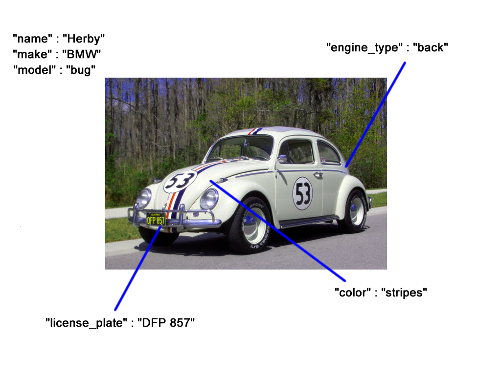
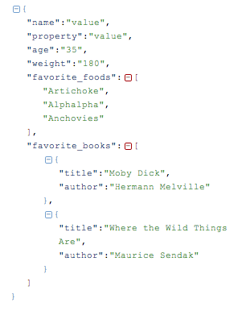
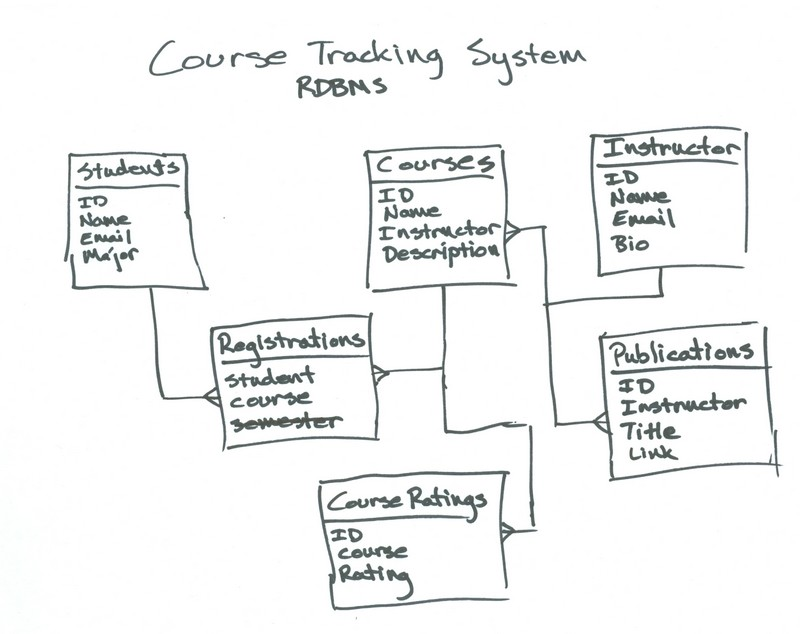

Introduction to Databases

What is a Database?
Introduction
When do I use a database?
In Memory vs File Storage vs Database
What is data modeling?
- Data modeling is the first step in database design and object-oriented programming
- Goal is to create a conceptual model of how data relate to each other
- Exploratory process that progresses from:
- Conceptual Models - high level domain models
- Logical Data Models - describe logical entities and relationships
- Physical Data Models - used to design internal database schemas
Modeling Real Things
Kinds of data
- Strings (characters within quotes, "Hi my name is Liz.")
- Numbers (numeral characters - 1, 3, 27, 49)
- Boolean (true or false)
- Arrays(Lists of anything ["Hello", 27, "Arugula"])
- Objects (key-value pairs)
An object looks like this:
{
"name" : "value",
"property" : "value",
"age" : "35",
"weight" : "180",
"favorite_foods" : ["Artichoke", "Alphalpha", "Anchovies"],
"favorite_books" : [{"title": "Moby Dick", "author" : "Hermann Melville"}, {"title" : "Where the Wild Things Are", "author" : "Maurice Sendak"}]
}
Data Comes in Hierarchies
Often, data is "nested" in "hierarchies" of objects within objects.
Methods of storing
- Plain Text (.txt)
- CSV (.csv)
- JSON (JavaScript Object Notation)
- Relational Database (SQL, Oracle)
- Non-Relational Database (MongoDB, Cassandra, etc)
Structure
car = {
"name": "Herby",
"make": "BMW",
"model": "Bug",
"purpose": "Love",
"engineType": "Back",
"color": "Stripes",
"year": "1970"
}
Might not be as helpful as...
car = {
"name": "Herby",
"make": "BMW",
"model": "Bug",
"purposes": ["Love", "Driving around", "Saving people?"],
"engine": {"location": "Back", "cylinders": 4, "fuel-injected": false, "loud": true},
"description": {"paint_profile": "Stripes", "colors": ["black", "white", "silver"], "attitude": "sassy"},
"year": "1970"
}
This matters a lot!
Data can limit your capabilities, or expand them.
Grouping similar pieces of data together helps you stay organized, and helps the computer use it faster and easier. It also helps engineers program things more efficiently.
if (car.engine.loud == true && car.description.attitude == "sassy") {
console.log("I think Herby the love bug is comin' down the road!");
}
How are things the same?
Let's try to model these books together.

What unique properties do they have? What properties do they share?
How are things the same?
What does it mean to be a book?
{
title: "",
author: "",
length: "",
ISBN: "",
cover: "",
language: "",
customer_rating: "",
tags: "",
amazon_link: "http://www.amazon.com/The-Power-Habit-What-Business/dp/1400069289/ref=sr_1_1?ie=UTF8&qid=1355257104&sr=8-1&keywords=power+of+habit"
}
{
title: "",
author: "",
length: "",
ISBN: "",
cover: "",
language: "",
customer_rating: "",
tags: "",
amazon_link: "http://www.amazon.com/Hyperspace-Scientific-Parallel-Universes-Dimension/dp/0195085140/ref=tmm_hrd_title_0?ie=UTF8&qid=1355257238&sr=1-1",
amazon_link2:"http://www.amazon.com/Hyperspace-Scientific-Odyssey-Parallel-Universes/dp/0385477058/ref=wl_it_dp_o_pC_nS_nC?ie=UTF8&colid=N55WK4E5RGPM&coliid=I39ORQQR1YUM18"
}
Baselines
Usually we try to go from generality - what does everything share in common, to specific - what makes everything unique?
Asking "what does something have to have at minimum to be this type of thing?" is a good way to find out a lot about your models.
Schema.org did a lot of this - check them out for some examples.
Exercise Time!
Modeling Places
In this exercise, you'll model two places for storage in a reviews website like Yelp, Google Local, or Foursquare.
We're not terribly worried about format for this. PAIR UP and don't worry about getting JSON exactly right - the important part is "name" : "value". If you get stuck trying to read something you wrote, here's a JSON Parser that will organize things for you.
Exercise Time!
Modeling Places
- First, create a new file - call it places.json
- Start with an array with two or more objects -
[{}, {}, {}] - We're going to model places from this list, or choose your own favorite places!
Exercise Time!
Modeling Places
Ask yourself these questions:
- What properties do each of these places have? An address? A name?
- How are they different?
- What makes them different in the same way? (like type: grocery store, or pub, or coffee shop)
- What information is useful, vs not useful? (phone numbers are useful, but number of bricks isn't. Unless you are building a national brick database.)
- What is someone looking for when they look up information about this thing? What am I looking for?
Entity Modeling
- Entity type - any type of object that we want to store data about
- Attribute - the data that we want to keep about each entity
- Primary key - the attribute used to identify a specific entity
- Composite key - a primary key made up of a unique combination of attributes
Relationships
Non-relational Systems
Modeling Relationships
Or... How does a non-relational DB work?
Recommended reading:
Types of Relationships
- One-to-One: A car model is made by one company.
- One-to-Many: One class has many students.
- Many-to-One: Many employees work in one department.
- Many-to-Many: Many orders have many products.
Together!
Let's try to model recipes together.

How are Foods and Recipes related?
Foods can appear in multiple recipes, so it makes sense not to duplicate foods.
Questions to ask:
- What does it mean to be an object?
- If I split these objects up, what does that mean for related data?
- If I create a relationship, what does that mean for related data?
- If I create a hierarchy, what does that mean for sub-objects? Related data?
- Will this allow me to do more things later, or restrict what I can do later?
- Is it worth the time right now to have an existential crisis about this?! (Usually not.)
Modeling Movies!
Making movies takes lots of relationships - Actors, Producers, Studios - we don't want to duplicate data, so let's form some relationships!
- First, create a new file - call it movies.json
- Start with three arrays with four or more objects
Movies = [{}, {}, {}, {}]
Actors = [{}, {}, {}, {}]
Studios = [{}, {}, {}, {}]
Modeling Movies!
Modeling Movies!
- These share actors, so we're going to assign an ID to each actor, studio, and movie.
- In each movie there are lots of actors - list only the top-billed actors for simplicity's sake. Create an array to hold just the IDs of the actors.
- Reference the ID of the actor you want to name by looking in your list of actors, and using the ID field.
- Do the same for the studios- reference them by ID (but you don't have to use an array)
- Try to simplify the studios - don't distinguish between Universal Studios and Universal Studios France. We're not IMDB :)
Don't be an "Architecture Astronaut"

"It is better to have a codebase you're moderately ashamed of that's full of hacks than nothing at all."
Resources
- Schema.org - A bunch of geeks decided to write down once and for all what you need at minimum to be anything.
- A super technical essay at agiledata.org
- Ignored by Dinosaur's blog post: Explaining Non-Relational Databases to My Mom
- Explanation of Entity Relationship Diagrams and Crows Feet Notation
Intro to SQL
- SQL - Structured Query Language
- Special purpose language for managing data in a RDBMS
- First introduced by Oracle in 1979
- SQL is an ANSI and ISO standard. While not perfectly portable, syntax across systems is mostly the same.
- SQL is great to know, because it is everywhere.
Database Schemas
- A structure described in a formal language
- Acts as a blueprint for how the database is constructed
- In a relational database, the schema defines:
- tables
- fields
- relationships
- views
- indexes
- functions
- and other elements
INSERT INFO ON mySQL
Tables
In a relational database, a table is an organized set of data using columns and rows.

You may sometimes hear a table referred to as a "relation".
The SELECT Statement
- We use the SELECT command to show data from a database
- The output from a SELECT statement is always a grid of rows and columns.
- The most simple SELECT statement retrieves all values from a single table
This will return all of the results from the table, which could be expensive.
SELECT .. WHERE
You can have only a subset of rows returned by using the WHERE clause
Alternatively, the SELECT .. WHERE statement can be made on one line:
SELECT * FROM Customer WHERE FirstName = "Mark";
WHERE Clause Operators
| Operator | Description |
| = | Equal |
| <> | Not equal. Note: In some versions of SQL, this may be written as != |
| > | Greater than |
| < | Less than |
| >= | Greater than or equal |
| <= | Less than or equal |
| BETWEEN | Between an inclusive range |
| LIKE | Search for a pattern |
| IN | To specify multipl possible values for a column |
Not Equal
SELECT * FROM Customer WHERE FirstName <> "Mark";
Greater Than
SELECT * FROM Employee WHERE BirthDate > "1970-01-01";
Less Than
SELECT * FROM Employee WHERE BirthDate < "1970-01-01";
BETWEEN
SELECT * FROM Employee WHERE BirthDate BETWEEN "1965-01-01" AND "1971-01-01";
LIKE
SELECT * FROM Track WHERE Name LIKE "%Love%";
IN
SELECT * FROM Track WHERE MediaTypeId IN (1,2);
Joining Tables
Finally, the real power of SQL!
The SQL JOIN clause combines records from two or more tables in a database. You will primarly use two types of joins, with some variations on these.
- Inner Join
- Outer Join
Our Tables
To illustrate these joins, let's say we have TableA and TableB. We want to join these tables in a variety of ways.
TableA TableB
================= =================
id name id name
================= =================
1 Pirate 1 Rutabaga
2 Monkey 2 Pirate
3 Ninja 3 Darth Vader
4 Spaghetti 4 Ninja
INNER JOIN
- The Inner Join is the most common type of join.
- It's so common that it's the default join type for SQLite.
- Selects only records that match both of the tables you are joining.
TableA TableB
================= =================
id name id name
================= =================
1 Pirate 1 Rutabaga
2 Monkey 2 Pirate
3 Ninja 3 Darth Vader
4 Spaghetti 4 Ninja
Inner Join
Selects only the records that match both TableA and TableB

SELECT * from TableA
INNER JOIN TableB
ON TableA.name = TableB.name;
================= =================
id name id name
================= =================
1 Pirate 2 Pirate
3 Ninja 4 Ninja
FULL OUTER JOIN
- The Full Outer Join produces all sets of records in TableA and TableB.
- Records from both sides are included, where available.
- If there is no matching record, the missing side will have a null value.
- Note: Full Outer Joins are not supported by SQLite
TableA TableB
================= =================
id name id name
================= =================
1 Pirate 1 Rutabaga
2 Monkey 2 Pirate
3 Ninja 3 Darth Vader
4 Spaghetti 4 Ninja
FULL OUTER JOIN
Selects all sets of records from TableA and TableB.

SELECT * from TableA
FULL OUTER JOIN TableB
ON TableA.name = TableB.name;
================= =================
id name id name
================= =================
1 Pirate 2 Pirate
2 Monkey null null
3 Ninja 4 Ninja
4 Spaghetti null null
null null 1 Rutabaga
null null 3 Darth Vader
LEFT OUTER JOIN
- The Left Outer Join produces all records from TableA, with matching records from TableB if they are available.
- If there is no matching record in TableB, the right side will have a null value.
TableA TableB
================= =================
id name id name
================= =================
1 Pirate 1 Rutabaga
2 Monkey 2 Pirate
3 Ninja 3 Darth Vader
4 Spaghetti 4 Ninja
LEFT OUTER JOIN
Selects all sets of records from TableA and TableB.

SELECT * from TableA
LEFT OUTER JOIN TableB
ON TableA.name = TableB.name;
================= =================
id name id name
================= =================
1 Pirate 2 Pirate
2 Monkey null null
3 Ninja 4 Ninja
4 Spaghetti null null
Records in TableA, but not TableB
- Let's say we want to know all of the records in TableA that don't also appear in TableB.
- We can do this by adding a WHERE clause to our left outer join.
TableA TableB
================= =================
id name id name
================= =================
1 Pirate 1 Rutabaga
2 Monkey 2 Pirate
3 Ninja 3 Darth Vader
4 Spaghetti 4 Ninja
Records in TableA, but not TableB
Remembere that the left outer join gave us null values for the right side if there was no corresponding record in TableB. We can now use this information to isolate the records we want.

SELECT * from TableA
LEFT OUTER JOIN TableB
ON TableA.name = TableB.name
WHERE TableB.id IS null;
================= =================
id name id name
================= =================
2 Monkey null null
4 Spaghetti null null
Records in TableA OR TableB, but not in both
- Let's say we want to know all of the records in TableA or TableB, but want to exclude records that appear in both.
- We can do this by adding a WHERE clause to a full outer join.
TableA TableB
================= =================
id name id name
================= =================
1 Pirate 1 Rutabaga
2 Monkey 2 Pirate
3 Ninja 3 Darth Vader
4 Spaghetti 4 Ninja
Records in TableA OR TableB, but not in both
This will give us records unique to TableA OR TableB.

SELECT * from TableA
FULL OUTER JOIN TableB
ON TableA.name = TableB.name
WHERE TableA.id IS null
OR TableB.id IS null;
================= =================
id name id name
================= =================
2 Monkey null null
4 Spaghetti null null
null null 1 Rutabaga
null null 3 Darth Vader
Ordering Data
Data from a SELECT statement can be ordered with the ORDER BY clause.
SELECT * from Invoice
ORDER BY InvoiceDate DESC;
The results will be ordered from newest to oldest. Following the keyword with ASC gives us the reverse order.
Group By
Data can also be grouped by identical values using the GROUP BY clause.
SELECT * from Invoice
GROUP BY CustomerId;
This query will return all invoices grouped by customer.
Let's put it all together
Additional Practice
Documentation
Relational Database Management Systems
THE END
Thank you for your attention!